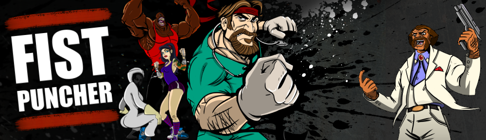

The Mean Streets of San Cruces...
The sinister Milkman holds the city of San Cruces in his nasty criminal grip, and it's up to legendary black belt neurosurgeon Dr. Karate, disgraced athlete Steroid Jackson, renegade derby girl Hella Fistgerald, the mysterious Beekeeper, the precocious Kid Justice, loose cannon Officer O'Grady, and the rest of the Fist Puncher team to deliver a dose of old-school justice. Clean up tweakers on a nude beach, crash a ninja golf tournament, battle atop a hijacked popcorn truck, race ostriches across a barren desert, and explore a haunted graveyard as the Fist Puncher vigilantes attempt to restore peace to the lawless streets. Featuring over 20 playable characters and packed with more than 50 levels, Fist Puncher is available on Steam and GOG.